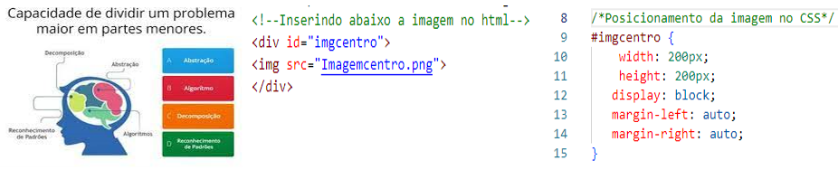

Voltar
Para inserir uma imagem - Tag de imagem:
Utilizaremos img e para src colocamos o endereço, exemplo: < img src="tagimagem.png" >,o nome do nosso arquivo.
É muito importante que o nome esteja escrito igual quando salvar a imagem e a extensão também,
caso contrário, o arquivo não será localizado e a imagem não aparecerá no site.
Como essa é uma tag de chamada de arquivo externo, não abrimos e fechamos. Ela apenas define a
tag.
Exemplo 1, no HTML inserir a imagem e no CSS posicionar a imagem a esquerda, definindo largura e altura.
Exemplo 2, no HTML inserir a imagem e no CSS posicionar a imagem no centro da página, definindo largura e altura.

Exemplo 3, no HTML inserir a imagem e no CSS posicionar a imagem a direita da página, definindo largura e altura.
Exemplo 4, alinhando imagens usando a barra no final e o br para quebra de linhas.